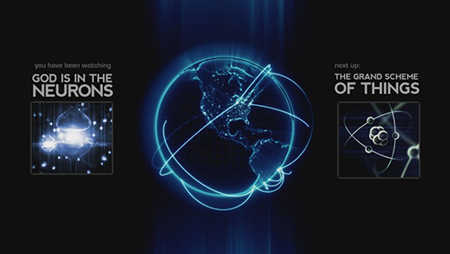

Introducing Physics
Physics is the most fundamental and all-inclusive of the sciences, and has had a profound effect on all scientific development. In fact, physics is the present day equivalent of what used to be called natural philosophy, from which most of our modern sciences arose. Students of many fields find themselves studying physics because of the basic role it plays in all phenomena. There is relation of physics to engineering, industry, society, and war, or even the most remarkable relationship between mathematics and physics.